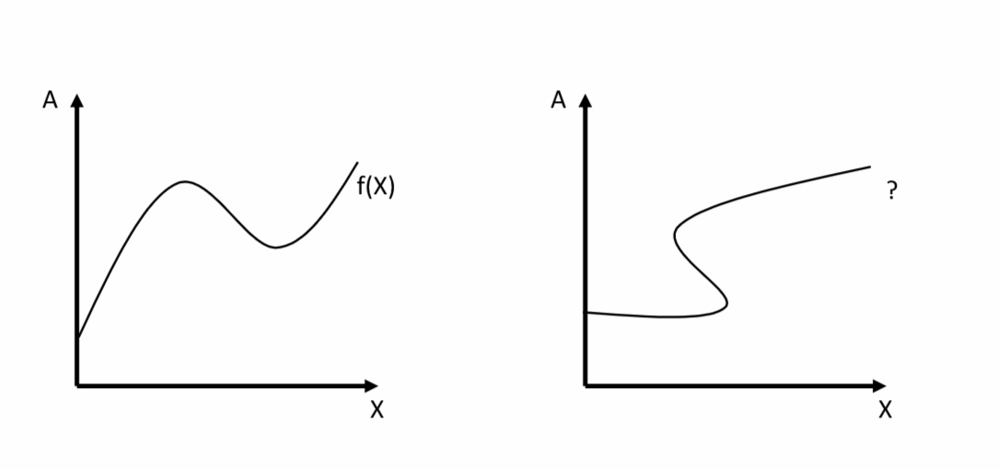
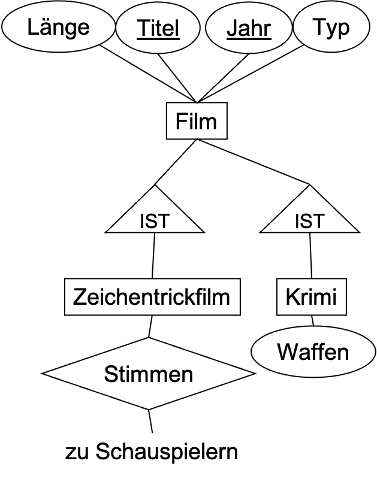

Normalisierung
Contents
7. Normalisierung¶
Bisher haben wir eine direkte Übersetzung von ER-Diagrammen in das relationale Modell behandelt. Dabei sind wir davon ausgegangen, dass das Ursprungsmodell sinnvoll erstellt und alle dazugehörigen Kardinalitäten sinnvoll auch im Sinne der Vermeidung von Redundanz modelliert wurden. In der Realität kann man aber nicht immer davon ausgehen, dass die Modellierung fehlerfrei durchgeführt wird. Zudem kann es nachdem konzeptionellen Entwurf zu Veränderungen hinsichtlich der Nutzung der Daten und den beziehungen zwischen den ursprünglichen Entitytypen und Relationshiptypen kommen, die zu Problem führen können. Insbesondere könnten vorher unbekannte funktionale Abhängigkeiten sichtbar werden, die eine Verfeinerung des (logischen) Entwurfes erfordern.
Beispiel: In der folgenden Filmtabelle werden Informationen zu Filmen abgespeichert. Bei der Modellierung wurde darauf geachtet, dass die Tabelle einen Schlüssel und mehrere Attribute hat.
FilmID |
Titel |
Jahr |
Länge |
Genre |
Studio |
Produktionsland |
|---|---|---|---|---|---|---|
1 |
Matrix I |
1999 |
136 |
SciFi |
Warner Bros. |
USA |
2 |
Lord of the Rings I |
2001 |
178 |
Fantasy |
Warner Bros. |
USA |
3 |
The Breakfast Club |
1985 |
97 |
Drama |
Universal |
USA |
4 |
Cruel Intentions |
1999 |
97 |
Drama |
Columbia Pictures |
USA |
Bei diesem Beispiel fällt auf, dass bestimmte Informationen mehrfach auftauchen. Insbesondere ist das bei Studio und USA der Fall. Es stellt sich heraus, dass das Produktionsland vom Studionamen abhängt. Dies ist nicht nur zufällig in dieser dargestellten Tabelle so, sondern konzeptionell auch begründet werden. Die Produktion wird dem Land zugerechnet, in dem sich das Studio befindet. An und für sich ist das kein großes Problem. Oft werden solche Abhängigkeiten hingenommen. Wenn wir jedoch eine Minimierung von Redundanz bei unserer Modellierung vornehmen wollen, müssen wir diese Abhängigkeit nutzen um Informationen die herleitbar sind nicht wiederholt zu speichern. Eine redundante Speicherung solcher Informationen kann dazu führen, dass bei zukünftigen Änderungen der Daten, die Abhängigkeit nicht in Betracht gezogen wird und Inkonsistenzen entstehen, die unsere nun erkannte Beziehung verletzen könnten. Die folgende Darstellung weist dieses Problem nicht mehr auf.
Filmtabelle
FilmID |
Titel |
Jahr |
Länge |
Genre |
Studio |
|---|---|---|---|---|---|
1 |
Matrix I |
1999 |
136 |
SciFi |
Warner Bros. |
2 |
Lord of the Rings I |
2001 |
178 |
Fantasy |
Warner Bros. |
3 |
The Breakfast Club |
1985 |
97 |
Drama |
Universal |
4 |
Cruel Intentions |
1999 |
97 |
Drama |
Columbia Pictures |
Studiotabelle
Studio |
Produktionsland |
|---|---|
Warner Bros. |
USA |
Universal |
USA |
Columbia Pictures |
USA |
Jetzt haben wir die Informationen zu jedem Studio in einer separaten Tabelle ausgelagert. Die Beziehung zwischen den Filmen ist über den Studionamen erhalten worden. Die neue Modellierung würde uns auch erlauben weitere Informationen pro Studio zu speichern ohne diese jeweils für jeden Film zu wiederholen. Es stellt sich heraus, dass in der neuen Studiotabelle das Attribut Studio die Funktion des Schlüssels übernommen hat. Das heißt, dass jeder Studioname nur ein mal vorkommt und die jeweiligen Studioeigenschaften genau bestimmt. Es gibt auch weitere Auswirkungen: Insbesondere können jetzt Studios unabhängig von Filmen existieren. Auch verschwinden Studios nicht aus unserer Datenbank, wenn wir die jeweiligen Filme löschen. In der usprünglichen Version hatten wir nur jede Studios für die wir auch Filme abgespeichert hatten.
Was wir in diesem Beispiel getan haben ist eine Relation zu dekomponieren. Dafür haben wir die funktionale Abhängigkeit zwischen Studioname und Produktionsland verwendet. Im folgenden werden wir diese Konzepte genauer besprechen um ein systematisches Vorgehen für die Dekomposition von Relationen herzuleiten.
7.1. Funktionale Abhängigkeiten (FDs)¶
Funktionen kennen Sie aus der Mathematik. Funktionen sind Abbildungen von Elementen einer Menge (Definitionsbereich) auf Elemente einer anderen Menge (Wertebereich), wobei jedem Element des Definitionsbereiches genau ein Element aus dem Werte Bereich zugeordnet wird. Die linke Abbildung unten zeigt den Graphen einer mathematischen Funktion. Die rechte Abbildung stellt jedoch keine Funktion dar, da einem X-Wert mehrere A-Werte zugeordnet wurden. Funktionale Abhängigkeiten folgen einer analogen Definition wie folgt.
{kind=link}
Definition – Funktionale Abhängigkeit Gegeben eine Relation mit einer Attributmenge \(X \subset R\) und einem Attribut \(A \in R\), dann ist \(X \rightarrow A\) eine funktionale Abhängigkeit wenn gilt, dass immer wenn zwei Tupel in den Werten der Attributmenge X übereinstimmen, stimmen sie auch im Attributwert für A überein.
Notation:
Begriffe: Funktionale Abhängigkeit oder FA, oder Functional Dependency oder FD
…, X, Y, Z sind Attributmengen
A, B, C, … sind Attribute
X → A: „X bestimmt A funktional.“
Kurzform: ABC statt {A, B, C}
Kurzform: Falls X → A, X → B, X → C schreiben wir auch X → ABC oder auch X → Y
Beispiele:
Titel, Jahr \(\rightarrow\) Länge
FilmID \(\rightarrow\) Titel
Studio \(\rightarrow\) Produktionsland
7.1.1. Dekomposition und Vereinigung¶
Bevor wir funktionale Abhängigkeiten einsetzen, wollen wir noch einige nützliche Transformationsregeln kennen lernen.
Dekompositionsregel \(A_1,A_2,…A_n \rightarrow B_1,B_2,…,B_m \Rightarrow \forall i \in [1:m]. A_1,A_2,…A_n \rightarrow B_i\) Die Dekompositionsregel besagt, dass wir jede FD mit mehr als einem Attribut auf der rechten Seite auch als eine Menge von FDs aufschreiben können, die jeweils immer die gleiche linke Seite aber nur eine Teilmenge bzw. nur ein Element aus der ursprünglichen rechten Seite aufzeigen. Mit dieser Regel können wir FDs vereinfachen und weitere Eigenschaften, wie zum Beispiel Minimalität (wird später erklärt) leichter prüfen.
Vereinigungsregel \( \forall i \in [1:m]. A_1,A_2,…A_n \rightarrow B_i \Rightarrow A_1,A_2,…A_n \rightarrow B_1,B_2,…,B_m\) Die Vereinigungsregel zeigt, dass die Umkehrung der Dekomposition möglich ist. Wir können alle FDs, die genau die gleiche Menge an Attributen auf der linken Seite aufzeigen zu einer FD zusammenfassen, indem wir die Attribute der rechten Seite aller ursprünglichen FDs vereinigen. Diese Regel dient der Zusammenfassung und Darstellbarkeit von FDs.
Beispiel
Titel, Jahr → Länge
Titel, Jahr → Typ
Titel, Jahr → StudioName
\(\Leftrightarrow\) Titel, Jahr → Länge, Typ, StudioName
■ Beide zuvor genannte Regeln funktionieren nur für die rechte Seite von FDs. Wir können nicht die linke Seite wie im folgenden Beispiel gezeigt dekomponieren.
Titel, Jahr → Länge \(\not\Rightarrow\) Titel → Länge \(\vee\) Jahr → Länge
7.1.2. Typen von FDs¶
Unter den verschiedenen funktionalen Abhängigkeiten gibt es verschiedene Kategorien, die unterschiedlich interessant sind. Es gibt triviale FDs, minimale FDs und andere Spezialfälle wie Schlüssel.
Trivial: Bei trivialen FDs sind die Attribute rechts eine Teilmenge der Attribute links. Diese FDs gelten als trivial, da natürlich jedes Attribut sich selbst funktional bestimmt. Genauso bestimmt jede Attributkombination jede ihrer Teilmengen funktional. Anders ausgedrückt gilt: „Zwei Tupel, die in einer Menge von Attributen übereinstimmen, stimmen auch in einem dieser Attribute überein.“
Beispiel: Titel, Jahr → Titel
Nicht-trivial: Wenigstens ein Attribut rechts kommt links nicht vor.
□ Beispiel: Titel, Jahr → Jahr, Länge
Völlig nicht-trivial: Die Attribute links und rechts sind disjunkt.
Beispiel: Titel, Jahr → Länge
Für die meisten Probleme, die wir betrachten interessieren wir uns immer nur für die völlig nicht-trivialen FDs. Insbesodnere können wir durch die Dekompositionsregel leicht triviale Komponenten einer FD entfernen.
7.1.3. Schlüssel als Spezialfall einer FD¶
Eine Menge aus einem oder mehr Attributen \(\{A_1, A_2, …, A_n\}\) ist Schlüssel der Relation R, falls gilt: Die Attribute bestimmen alle anderen Attribute funktional.
Anmerkung: Relationen sind Mengen, es kann also keine zwei völlig identischen Tupel geben.
Besonders interessant sind in diesem Zusammenhang sogenannte minimale Schlüssel, bei denen gilt, dass Keine echte Teilmenge von \(\{A_1, A_2, …, A_n\}\) alle anderen Attribute funktional bestimmt.
Beispiel: Betrachten wir wieder unser ursprüngliches Beispiel.
FilmID |
Titel |
Jahr |
Länge |
Genre |
Studio |
Produktionsland |
|---|---|---|---|---|---|---|
1 |
Matrix I |
1999 |
136 |
SciFi |
Warner Bros. |
USA |
2 |
Lord of the Rings I |
2001 |
178 |
Fantasy |
Warner Bros. |
USA |
3 |
The Breakfast Club |
1985 |
97 |
Drama |
Universal |
USA |
4 |
Cruel Intentions |
1999 |
97 |
Drama |
Columbia Pictures |
USA |
{FilmID} ist der Schlüssel für diese Relation und natürlich bestimmt FilmID jedes andere Attribut funktional.
Ob weitere Attributkombinationen Schlüssel sein können, hängt von der Domäne ab. In dieser kleinen Tabelle könnte man meinen, dass auch der Titel ein Schlüssel sein könnte, da jeder Titel nur einmal auftraucht und somit automatisch jedes weitere Attribut eindeutig bestimmt. Wenn wir Titel als Schlüssel betrachten, erlauben wir keine unterschiedlichen Filme mehr mit identischen Titeln. Damit könnten wir keine Filmremakes mehr in unsere Datenbank aufführen. Theoretisch wäre es möglich Titel und Jahr gemeinsam als Schlüssel zu betrachten, da es unwahrscheinlich ist, dass ein Film mit dem exakt selben Titel im gleichen Jahr auftaucht.
7.1.4. Superschlüssel¶
Eine Relation kann mehr als einen Schlüssel besitzen. Es gilt jedoch immer genau einen Primärschlüssel zu spezifizieren. Hierbei gilt es zu erkennen, dass jede Attributmenge, die alle Attribute eines Schlüssels enthält auch die Schlüsseleigenschaft aufweist. Eine Attributmenge, die einen Schlüssel enthält, nennt man einen Superschlüssel. Es können auch unnötige Attribute in einem Superschlüssel existieren. Ein (Primär)schlüssel ist jedoch grundsätzlich minimal. Das heißt, dass keine Teilmenge des Schlüssels auch die Schlüsseleigenschaft besitzt.

In der Abbildung oben, sieht man auch, dass es sogenannte Schlüsselkandidaten gibt. Da wir grundsätzlich genau ein Primärschlüssel spezifizieren, sind alle anderen Attributkombinationen die minimal sind und Schlüsseleigesnchaften erfüllen Schlüsselkandidaten. Wir werden oft den Begriff Schlüssel für Schlüsselkandidaten nutzen.
Beispiele: {FilmID} ist ein Schlüssel, ein Schlüsselkandidant und ein Superschlüssel.
{Titel, Jahr} ist ein Schlüsselkandidat und ein Superschlüssel. Da FilmID bereits Primärschlüssel ist, kann {Titel, Jahr} nur noch Schlüsselkandidat sein.
{Titel, Jahr, Länge} ist ein Superschlüssel und ist nicht minimal.
Minimal vs. kleinster
Minimaler Schlüssel: Kein Attribut darf fehlen
Ist nicht unbedingt kleinster Schlüssel
Beispiel: {Titel, Jahr}
Kleinster Schlüssel: Schlüssel mit wenigsten Attributen
Ist auch minimal
Beispiel: {FilmID}
7.1.5. Wo kommen FDs her? Schema vs. Instanz¶
Wir hatten bereits festgestellt, dass wir auch weitere zufällige FDs in unserer Filmrelation finden können. Zum Beispiel gilt in der dargestellten Instant {Länge, Jahr} \(\rightarrow\) {Titel}. Nach unserer ursprünglichen Definition handelt es sich hierbei um eine funktionale Abhängigkeit. Noch schlimmer: {Länge, Jahr} könnte sogar als Schlüssel definiert werden. Es ist leicht einzusehen, dass dieser Schlüssel nicht sinnvoll ist.
Ob letztlich eine FD gelten soll, muss während der Modellierung entschieden werden. Das heißt, dass die FD unabhängig von den vorhanden Daten immer gelten muss. Das gleiche gilt auch für Schlüssel. Während Schlüssel hauptsächlich dafür definiert werden um Einträge von einander unterscheiden zu können, können FDs als Einschränkungen auf einer Relation definiert werden um so Integrität von Daten herzustellen. Die Einhaltung und Überprüfung von funktionalen Abhängigkeiten hilft die Qualität und Konsistenz von Daten aufrecht zu erhalten. Beispielsweise kann man mit der Definition einer funktionalen Abhängigkeit {Postleitzahl}\(\rightarrow\){Stadt} sicherstellen, dass dieselbe Postleitzahl nicht fälschlicherweise mit zwei unterschiedlichen Städten assoziiert wird.
7.1.6. Schlüssel aus ER-Diagrammen¶
Schlüsselinformationen sind grundsätzlich bereits im ER-Modell bekannt und müssen anhand der folgenden Regeln übernommen werden.
Falls die Relation von einem Entitytypen stammt, bestehen die Schlüsselattribute der Relation aus den Schlüsselattributen des Entitytypen.
Falls die Relation von einem Relationshiptypen stammt muss man die Kardinalitäten betrachten.
\(m:n\): Schlüssel besteht aus den Schlüsselattributen der verbundenen Entitytypen.
\(1:n\): Schlüssel besteht aus den Schlüsselattributen des Entitytypen der n-Seite.
\(1:1\): Zwei mögliche Schlüssel. Hierbei ist zu beachten, dass die Umwandlung kapazitätserhöhend werden könnte.
Schlüssel der beiden beteiligten Entitytypen. Wahl eines der beiden Schlüssel als Primärschlüssel (egal welcher).
Bei n-ären Relationshiptypen kann es komplizierter werden. Die 1-Seite muss nie am Schlüssel beteiligt sein.
Falls die Relation aus einem schwachen Entitytypen stammt, müssen die Schlüssel der bestimmtenden Entitytypen mit übernommen werden.
Beispiel 1:

\(Filme(\underline{Titel, Jahr}, Länge, Typ)\) (Regel 1)
\(Schauspieler*in(\underline{Name, Adresse})\) (Regel 1)
\(Studio(\underline{Name}, Adresse)\) (Regel 1)
\(besitzt(\underline{Titel, Jahr}, Name)\) (Regel 2B)
zusammengefasst mit Filme zu Film \((\underline{Titel, Jahr}, Länge, Typ, StudioName)\)
\(spielt\_in(\underline{Titel, Jahr, Name, Adresse}, Gehalt)\) (Regel 2A)
Beispiel 2 (1:1-Beziehungen):

\(Studios(\underline{SName})\) (Regel 1)
\(Vorsitzende(\underline{VName})\) (Regel 2)
\(leitet(\underline{SName}, VName)\) oder leitet\((SName, \underline{VName})\) (Regel 2C)
Es gibt zwei Schlüssel: SName und VName und ein Schlüssel muss als Primärschlüssel gewählt werden.
Es gibt entsprechend zwei Möglichkeiten die Relation zusammenzufassen zu \(Studios(\underline{SName}, VName)\) oder \(Vorsitzende(\underline{VName}, SName)\). Je nach Umwandlung ist die Darstellung kapazitätserhöhend. In Datenbanksystemen kann man durch weitere Integritätsbedingungen wie z.B. unique verhindern, dass die Nicht-schlüsselspalte doppelte Einträge erhält.
Beispiel 3 (n-äre Relationshiptypen):

\(Studio (\underline{Name}, Adresse)\)
\( Schauspieler*in (\underline{Name}, Adresse)\)
\(Film (\underline{Titel, Jahr}, Typ, Länge)\)
\(ist\_unter\_Vertrag (\underline{SchauspielerName, Titel, Jahr}, StudioName, Gehalt)\). Studioname ist nicht teil des Schlüssels (Regel 3)
Beispiel 4 (Schwache Entitytypen):

\(Studio(\underline{Name}, Adresse)\) (Regel 1)
\(Schauspieler(\underline{Name}, Adresse)\) (Regel 1)
\(Film(\underline{Titel, Jahr}, Typ, Länge)\) (Regel 1)
\(Vertrag(\underline{SchauspielerName, StudioName, Titel, Jahr}, Gehalt)\) (Regel 4)
7.1.7. Schlüssel aus ER-Diagrammen: IST-Hierarchien¶
Beispiel 5 (IST-Hierarchien):
{kind=link}
Bei IST-Hierarchien müssen die Schlüsselattribute in allen Relationen mit übernommen werden.
ER-Stil: Im ER-Still muss sichergestellt werden, dass der selbe Schlüssel in der Basisrelation das selbe Objekt in der Unterklasse repräsentiert.
\(Film(\underline{Titel, Jahr}, Länge,Typ)\)
\(Krimi(\underline{Titel, Jahr}, Waffen)\)
\(Zeichentrickfilm(\underline{Titel, Jahr})\)
OO-Stil: Im OO-Stil muss man zusätzlich sicherstellen, dass der selbe Schlüssel nicht in mehreren Relationen gleichzeitig auftaucht.
\(Film(\underline{Titel, Jahr}, Länge, Typ)\)
\(FilmZ(\underline{Titel, Jahr}, Länge, Typ)\)
\(FilmK(\underline{Titel, Jahr}, Länge, Typ, Waffen)\)
\(FilmZK(\underline{Titel, Jahr}, Länge, Typ, Waffen)\)
Mit NULL-Werten: Die Schlüssel sind hier wie bei jeder normalen Relation. Die obengenannten Probleme beim OO-Stil und ER-Stil können nicht auftreten.
\(Film(\underline{Titel, Jahr}, Länge, Typ, Waffen)\)
7.2. Ableitungsregeln für FDs¶
Während man im ER-Modell bereits Schlüssel definieren kann, kann es vorkommen, dass man bestimmte ableitbare Abhängigkeiten zur Designzeit übersieht. Mit den bereits bekannten funktionalen Beziehungen kann man aber alle geltenden funktionalen Abhängigkeiten in einer Relation herleiten. Das Ziel des Datenbankentwurfes ist es alle abgeleiteten FDs an Hand von Dekomposition in Schlüsselabhängigkeiten umzuformen ohne dabei semantische Informationen zu verlieren. Diese Umwandlung dient wie im Eingangsbeispiel des Kapitels gezeigt dazu Redundanz in den Daten zu vermeiden.
7.2.1. Transitivitätsregel¶
Die wichtigste Regel bei der Ableitung weiterer funktionaler Abhängigkeiten ist die Transivitätsregel:
Gegeben zwei funktionaler Abhängigkeiten \(A_1,A_2,…,A_n \rightarrow B_1,B_2,…,B_m\) und \(B_1,B_2,…,B_m → C_1,C_2,…,C_k\) kann daraus die funktionale Abhängigkeit \(A_1,A_2,…,A_n → C_1,C_2,…,C_k\) abgeleitet werden.
Beispiel und Beweis: Gegeben sei die Relation R(A,B,C) mit folgender Instanz und es gelte \(A\rightarrow B\) und \(B\rightarrow C\)
A |
B |
C |
|---|---|---|
\(a_1\) |
\(b_1\) |
\(c_1\) |
\(a_2\) |
\(b_1\) |
\(c_1\) |
\(a_3\) |
\(b_2\) |
\(c_1\) |
\(a_4\) |
\(b_1\) |
\(c_1\) |
Aus den FDs \(A\rightarrow B\) und \(B\rightarrow C\) lässt sich durch die transitivität der funktionalen Abhängigkeit auch \(A\rightarrow C\) herleiten.
Beweis:
Z.z.: Zwei beliebige Tupel, die in A übereinstimmen, müssen auch in C übereinstimmen.
Beweis durch Widerspruch: Es gibt zwei beliebige Tupel, die in A übereinstimmen aber nicht in C:
\(t_1 = (a, b_1, c_1)\) und \(t_2 = (a, b_2, c_2)\) mit \(c_1\neq c_2\)
Da \(A\rightarrow B\) gilt \(b_1=b_2\) und \(t_1=(a, b_1, c1)\) und \(t_2= (a, b_1, c_2)\)
Da \(B\rightarrow C\) und \(b_1=b_2\) gilt \(c_1=c_2\) \(\Rightarrow\) Widerspruch
QED
Nicht ableitbar: C→A, B→A oder C→B
7.2.2. Armstrong Axiome und weitere Ableitungsregeln¶
Die Transitivitätsregel ist eine Regel der sogenannten Armstrong Axiome, die alle möglichen Ableitungsmöglichkeiten abdecken:
R1: Die Reflexivität besagt, dass jede Attributkombination sich selbst bzw. eine beliebige nicht-leere Teilmenge der eigenen Kombination funktional bestimmt, d.h., \(X \supseteq Y \Rightarrow X\rightarrow Y\) (insbes. \(X\rightarrow X\)). Die Regel bezieht sich auf triviale FDs, wie zuvor kennen gelernt.
R2: Die Akkumulation besagt, dass beim Hinzufügen des selben Attributs auf die linke und rechte Seite einer funktionalen Abhängigkeit eine neue gültige funktionale Abhängigkeit entstehen kann, d.h., \(X\rightarrow Y \Rightarrow XZ\rightarrow YZ\). Diese Regel wird auch Augmentation genannt.
R3: Die Transitivität besagt, wie bereits erklärt \(X\rightarrow Y \wedge Y \rightarrow Z \Rightarrow X\rightarrow Z\)
Die oberen drei Axiome sind minimal, gültig und vollständig. Es gibt auch weitere Axiome, die nützlich sind aber aus den ersten drei Axiome herleitbar sind. Die Dekompositionsregel und die Vereinigungsregel haben wir bereits zuvor kennengelernt.
R4: Dekomposition \(X\rightarrow YZ \Rightarrow X\rightarrow Y\)
R5: Vereinigung \(X\rightarrow Y \wedge X\rightarrow Z \Rightarrow X\rightarrow YZ\)
R6: Die Pseudotransitivität ist eine weitere nützliche Regel mit der Man die funktionale Abhängigkeit einer Teilmenge von Attributen ausnutzen kann um diese in einer anderen funktionalen Abhängigkeit zu ersetzen. \(X \rightarrow Y\wedge WY \rightarrow Z \Rightarrow WX\rightarrow Z\)
7.2.3. FD-Mengen¶
Die Tatsache, dass wir mit einer Teilmenge der geltenden FDs auf einer Relation andere geltende herleiten können ruft die Frage hervor, wann zwei solche Mengen zu den exakt gleichen FDs insgesamt führen können. Hierbei sprechen wir von Äquivalenz von FD-Mengen:
Zwei Mengen S und T an FDs heißen äquivalent, falls die Menge der gültigen Instanzen unter S die gleiche wie unter T ist. Das heißt, dass für beide Mengen nach einer umfangreichen herleitung aller ableitbarer FDs die selbe Menge entstehen könnte.
Wenn wir die Richtungen der Äquivalenz einzeln betrachten können wir auch aussagen:
Eine Menge S an FDs folgt aus einer Menge T an FDs, falls jede unter T gültige Instanz auch unter S gültig ist.
Die Äquivalenz von FD-Mengen bieten uns die Grundlage dafür ohne Informationsverlust neue FDs abzuleiten.
7.2.4. Hüllenbildung¶
Da wir möglichst alle geltenden FDs in Schlüsselabhängigkeiten umwandeln wollen müssen wir auch alle geltenden minimalen FDs ableiten. Das Verfahren hierfür heißt Hüllenbildung: Hierunter versteht man genau die Ableitung aller FDs aus einer gegebenen Menge an FDs, gemäß Ableitungsregeln.
Äquivalente Begriffe sind: attribute closure, closure, Attributabschluss
Gegeben eine Menge von Attributen \(A_1,A_2,…,A_k\) einer Relation und eine Menge S von FDs, die Hülle der Menge A1,A2,…,Ak unter S ist die Menge Y aller Attribute für die gilt, dass für jede unter S gültige Relation auch \(A_1,A_2,…,A_k \rightarrow Y\) gilt. Dies entspricht der Menge der funktional ableitbaren Attribute. Das heißt \(A_1,A_2,…,A_k \rightarrow Y\) folgt aus den FDs in S.
Notation: Die Hülle von \(A_1,A_2,…,A_k\) wird in Form von \(\{A_1,A_2,…,A_k\}^+\) ausgedrückt.
Es gilt trivialerweise und folgend aus dem Reflexivitätsaxiom: \(A_i \in \{A_1,A_2,…,A_k\}^+\) für i=1,…,k
7.2.5. Berechnung der Hülle¶
Zusätzlich zu den trivialen Elementen der Hülle, wollen wir alle weiteren funktional erreichbaren Attribute entdecken. Das Verfahren dazu ist iterativ unter Anwendung aller funktionalen Abhängigkeiten, die bekannt sind oder bereits hergeleitet wurden. Damit wächst die Hülle iterativ mit jeder nicht-trivialen funktionalen Abhängigkeit wie in der Abbildung unten dargestellt. Durch die funktionalen Abhängigkeit \(B_1,B_2,...,B_m \rightarrow C\) wächst die Hülle \(\{B_1,B_2,...,B_m\}^+\) von \(\{B_1,B_2,...,B_m\}\) auf \(\{B_1,B_2,...,B_m,C\}\).

Arbeitsschritte der Hüllebildung von \(\{A_1,A_2,…A_k\}\) unter Anwendung der FDs S:
Initialisiere die Hülle \(X\) mit \(\{A_1,A_2,…A_k\}\).
Suche wiederholt nach solchen FDs \(B_1,B_2,…,B_m→ C\), dass \(B_1,B_2,…,B_m \in X \wedge C \notin X\).
Füge \(C\) zu \(X\) hinzu.
Wiederhole 2. bis keine Attribute mehr gefunden werden
Terminierung: X wächst nur, und Attributmenge ist endlich.
\(X\) ist schließlich die Hülle, also \(\{A_1,A_2,…A_k\}^+ = X\).
Beispiel (Hüllenbildung): Gegeben eine Relation mit Attributen A, B, C, D, E, F. Weiterhin seien gegeben FDs
AB → C
BC → AD
D → E
CF → B
Gesucht ist die Hülle von {A, B}, also \(\{A,B\}^+\)
Nach der Anwendung von FD 1 kann C hinzugefügt werden: X = {A, B, C}
Nach der Anwendung von FD 2 kann D hinzugefügt werden: X = {A, B, C, D}
Nach der Anwendung von FD 3 kann E hinzugefügt werden: X = {A, B, C, D, E}
Es können keine weiteren Attribute mehr hinzugefügt werden. Deshalb gilt \(X = \{A, B, C, D, E\}= \{A,B\}^+\)
7.2.6. Membership-Problem¶
Bei der Hüllenbildung haben wir nach und nach alle ableitbaren Attribute einer Hülle hinzugefügt. Wir haben aber noch keine konkrete neue FD hergeleitet. Die Frage die wir nun beantworten wollen, ist ob eine bestimmte FD \(X\rightarrow Y\) aus der gegebenen FD Menge abgeleitet werden kann.
Vorgehen: Berechne erst die Hülle von X und teste ob Y darin enthalten ist.
Beispiel (Membership-Problem):
Gegeben AB → C und BC → AD und D → E und CF → B, kann AB → D abgeleitet werden?
Wir bilden die Hülle \(\{AB\}^+\)
– \(\{AB\}^+ = \{A, B, C, D, E\}\)
– \(D \in \{A, B, C, D, E\}\), also JA!
Kann D → A abgeleitet werden? Wir bilden die Hülle \(\{D\}^+\)
\(\{D\}^+ = \{D, E\}\)
\(A \notin \{D, E\}\), also NEIN!
7.2.7. Analyse des Algorithmus zur Hüllenbildung¶
Wir wollen nun kurz diskutieren, inwiefern der Algorithmus zur Hüllenbildung korrekt funktioniert und en vollständiges Ergebnis im Sinne der Hülle liefert. Dies kann man formal nachweisen. Wir begnügen uns jedoch nur mit der Beweisidee.
Korrektheit: Es ist wichtig nachzuvollziehen, dass der Algorithmus keine ungültigen FDs erzeugt. Dies lässt sich durch die Induktion über die Anzahl der Operationen beweisen. Da in jedem Schritt eine gültige FD für die Erweiterung der Hülle genommen wird, kann kein Element hinzugefügt werden, die nicht auf einer korrekten FD basiert. Mit dieser Intuition kann man auch leicht ein Beweis durch Widerspruch mit Hinzunahme der Transitivität und Tupelvariablen durchführen.
Vollständigkeit: Es ist weiterhin wichtig, nachzuvollziehen, dass alle gültigen FDs ausgehend von der Grundmenge erzeugt werden. Die Vollständigkeit lässt sich leicht durch ein Widerspruchsbeweis zeigen, indem man annimmt, dass es eine FD \(X \rightarrow Y\) gibt, die nicht gefunden wird aber ableitbar wäre. Man muss lediglich eine Instanz konstruieren, die für alle FDs, aber nicht für \(X\rightarrow Y\) gültig ist.
7.2.8. Die „Basis“¶
Wir haben gesehen, dass es möglich ist anhand von gegebenen FDs weitere FDs herzuleiten. Insbesondere haben wir auch besprochen, dass es äquivalente FD-Mengen geben kann, die jedoch nicht exakt die gleichen FDs jeweils enthalten. Der Vorteil hierbei ist, dass man jeweils eine solche Basismenge nehmen kann, um eine Gesamtmenge von FDs zu repräsentieren.
Eine Menge an FDs, aus der alle anderen FDs abgeleitet werden können, heißt Basis.
Falls keine echte Teilmenge der Basis wiederum selbst eine Basis ist, ist die Basis minimal.
Beispiel (Basis): Gegeben eine Raltion R(A, B, C) wobei jedes Attribut die anderen beiden Attribute funktional bestimmt. Damit gelten \(A \rightarrow B, A\rightarrow C, B\rightarrow A, B\rightarrow C, C\rightarrow A, C\rightarrow B\). Für diese Menge von FDs ist die folgende Menge eine minimale Basis: \(B_1=\{A\rightarrow B, B\rightarrow A, B\rightarrow C, C\rightarrow B\}\). Alle anderen FDs lassen sich hierbei herleiten. Eine weitere minimale Basis ist \(B_2=\{A\rightarrow B, B\rightarrow C, C\rightarrow A\}\). Diese minimale Basis ist kleiner als \(B_1\). Dennoch ist auch \(B_1\) eine minimale Basis, da wir keine der dort enthaltenen FDs weglassen können. Bei jeder echten Teilmenge von \(B_1\) wird es geltende FDs geben, die wir nicht mehr ableiten können.
7.2.9. FDs nach Projektionen¶
Bevor wir nun endlich zu der eigentlichen Aufgabe der Normalisierung übergehen müssen wir nur noch eine letzte Eigenschaft von FDs klären. Da Normalisierung eine Relation in mehrere Relationen dekomponiert, müssen wir klären, was mit den jeweiligen FDs passiert, dessen Attribute nicht mehr in den gleichen Relationen existieren.
Gegeben eine Relation \(R\) mit Menge \(F\) an FDs. Sei \(S\) das Ergebnis einer Projektion nach Entfernung einiger Attribute aus \(R\). In \(S\) gelten alle FDs aus \(F\), die nur Attribute aus \(S\) verwenden.
Beispiel (FDs nach Projektionen):
Gegeben eine Relation \(R(A, B, C, D)\) und eine Menge von FDs \(F= \{A\rightarrow B, B\rightarrow C, C\rightarrow D\}\). Wir führen eine Projektion aus und entfernen das Attribut \(B\). Das Ergebnis ist \(S(A, C, D)\)
Um nun alle FDs, die in \(S\) gelten abzuleiten bilden wir wieder die Hülle für alle Teilmengen in \(S\) anhand von \(F\) und entfernen alle FDs, die \(B\) enthalten.
Wir beginnen mit \(A\): \(\{A\}^+ = \{A, B, C, D\}\) Es gilt insbesondere \(A \rightarrow C\) und \(A\rightarrow D\). \(A\rightarrow B\) stimmt zwar auch, aber \(B\) nicht in \(S\). Da \(\{A\}^+\) bereits alle Attribute aus \(S\) enthält, müssen wir keine Supermengen von \(\{A\}\) berücksichtigen. Für \(C\) ist die Hülle analog \(\{C\}^+ = \{C, D\}\) und die einzige nicht triviale minimale FD hierbei ist \(C \rightarrow D\) Aus \(D\) lassen sich keine weiteren Attribute funktional ableiten: \(\{D\}^+ = \{D\}\). Als nächstes müssen wir die Übermengen von \(C\) und \(D\) betrachten. Die Kombinationen mit \(A\) sind irrelevant da \(\{A\}^+\) bereits alle Attribute enthält. Es bleibt noch \(\{C,D\}^+= \{C,D\}\) übrig, welche uns keine weiteren FDs mehr liefert.
Damit ist das Ergebnis für die auf \(S\) gletenden FDs: \(A \rightarrow C\), \(A \rightarrow D\) und \(C \rightarrow D\)
7.3. Normalformen¶
Wir haben jetzt das Grundwerkzeug für die Normalisierung von Relationen, nämlich FDs und ihre Ableitbarkeit kennengelernt. Nun werden deren Einsatz zur Herbeiführung sogenannter Normalformen kennen lernen. Es gibt mehrere Normalformen, die jeweils unterschiedlich streng sind. Wir werden zunächst mit der gängigen Boyce-Codd-Normalform (BCNF) anfangen und diese motivieren und dann weitere Normalformen im Vergleich kennen lernen.
7.3.1. Redundanzen führen zu Anomalien im Datenbankdesign¶
Wir am Anfang des Kapitels angedeutet, ist das Grundproblem von nicht-normalisierten Schemata Redundanz. Nicht nur weil Redundant Speicherplatz verschwendet sondern auch weil bestimmte Anomalien entstehen können. Betrachten wir hierzu die folgende nicht-normalisierte Tabelle. Es sollte leicht einzusehen sein, dass funktionale Abhängigkeiten hier gelten, bei der linke Seite kein Schlüssel ist. Z.B. KundenID \(\rightarrow\) Kunde, Kundenaddresse. Für die selbe KundenID muss man jedes mal den Kundennamen und die Kundenadresse neu eintragen.
Man sieht auch dass Service und Umfang funktional den Preis bestimmen.

So eine Struktur mit funktinonalen Abhängigkeiten kann zu signifikanten Problemen führen. Diese werden als Anomalien bezeichnet.
Update-Anomalien: Veränderungen müssen an allen Stellen durchgeführt werden. Wenn Herr Meyer eine neue Adresse erhält, muss die Adresse an jeder Stelle in der Tabelle aktualisiert werden.
Insert-Anomalien: Wenn die FD nicht als Integritätsbedingungen erzwungen wird, könnte man durch das Hinzufügen neuer Tupel Inkonsistenzen herbeiführen: Gleicher Kunde mit neuer Adresse.
Delete Anomalien: Beim löschen einer Zeile gehen mehr Informationen verloren als notwendig. Wenn wir zum Beispiel Auftrag 1 löschen, führt das dazu, dass Reifenwechsel im Basic Format nicht mehr als Service in der Datenbank vorhanden ist.
Die Ursachen solcher Anomalien befinden sich in das Zusammenlegen von \(N:M\)-Beziehungen, z.B. Kunden und Servicekombinationen, und transitive \(N:1\)-Beziehungen, z.B. AuftragsID \(\rightarrow\) {Service, Umfang}\(\rightarrow\) Preis.
7.3.1.1. Dekomposition (Zerlegung)¶
Um die obengenannten Anomalien zu vermeiden müssen wir die Relationen dekomponieren. Im unteren Bild sieht man eine erfolgreiche Dekomponierung, in der alle Anomalien beseitigt wurden.
Bei einer Dekomposition werden im allgemeinen die Attribute in Teilrelationen aufgeteilt.
\(R(A_1,A_2,…,A_n)\) kann in \(S(B_1,B_2,…,B_m)\) und \(T(C_1,C_2,…,C_k)\) dekomponiert werden, falls
\(\{A_1,A_2,…,A_n\} = \{B_1,B_2,…,B_m\} \cup \{C_1,C_2,…,C_k\}\)
Für jede Relation wird dann entsprechend der Urpsrungsrelation neue Tupel erzeugt.
Tupel in \(S\) oder \(T\) sind die Projektion aller Tupel in R auf \(\{B_1,B_2,…,B_m\}\) und \(\{C_1,C_2,…,C_k\}\) wobei Duplikate entfernt werden und redundanz vermindert wird.

7.3.2. Boyce-Codd-Normalform (BCNF)¶
Natürlich hilft es nicht eine Relation beliebig zu zerlegen. Um Redundanz effektiv zu beheben werden wir die bekannten funktionalen Abhängigkeiten hierfür nutzen und diese in Schlüssel umwandeln. Die BCNF ist eine Bedingung zur Eliminierung von Anomalien und es gibt einen entsprechenden Algorithmus jede Relation in BCNF umzuwandeln.
Eine Relation \(R\) ist in BCNF genau dann wenn für jede nicht-triviale funktionale Abhängigkeit, die linke Seite ein Superschlüssel ist. Zur Erinnerung: Nichttrivial bedeutet, dass wenigstens ein Attribut er rechts kommt links nicht vorkommt und ein Superschlüssel ist die Supermenge eines Schlüssels.
Im Umkerhschluss ist es nicht erlaubt, dass eine FD existiert, dessen linke Seite kein Superschlüssel ist.
Beispiel(BCNF-Verletzung):
In der Tabelle oben ist AuftragsID der Schlüssel. Das heißt, dass alle Superschlüssel AuftragsID enthalten müssen. Gleichzeitig gibt es die FD: {KundenID} \(\rightarrow\) {Kunde, Kundenadresse}. Jedoch ist {KundenID} ist kein Superschlüssel. Damit liegt eine Verletzung der BCNF vor.
7.3.2.1. Algorithmus für Dekomposition nach BCNF¶
Kennt man die BCNF-verletzenden FDs ist die Dekomposition klar definiert. Der Grundalgorithmus ist wie folgt: Gegeben eine Relation \(R\):
Suche verletzende nichttriviale FD: \(X \rightarrow B_1, B_2, … ,B_n\) mit \(X \subset R\) und \(B_1, B_2, … , B_n \in R\)
Füge auf der rechten Seite so viele Attribute hinzu wie möglich:
Betrachte alle Attribute die von \(X\) funktional bestimmt werden
Betrachte die Hülle von \(X\)
Erzeuge zwei neue Relationen:
\(R \backslash \{B_1, B_2, … , B_n\}\)
\(X \cup \{B_1,B_2,…,B_n\}\)
Beispiel(Dekomposition): Wir betrachten unsere Auftragstabelle mit der Relation Auftrag(AuftragsID, KundenID, Kunde, Kundenaddresse, Service, Umfang, Preis) und die BCNF-verletzende FD: KundenID \(\rightarrow\) Kunde, Kundenadresse
Nach der Anwendung des obigen Algorithmus ergeben sich folgende Neue Relationen die wir mit Auftrag1 und Auftrag2 bennen:
Auftrag1(AuftragsID, KundenID, Service, Umfang, Preis)
Auftrag2(KundenID, Kunde, Kundenadresse)
Wir sehen im Ergebnis der Dekomposition der Tabellen, dass die Duplikate zu Herr Meyer und Herr Schmidt entfernt wurden.
Auftrag1 (\(R \backslash \{B_1, B_2, … , B_n\}\)):
AuftragsID |
KundenID |
Service |
Umfang |
Preis |
|---|---|---|---|---|
1 |
230 |
Reifenwechsel |
Basic |
65 Euro |
2 |
220 |
Reinigung |
Basic |
50 Euro |
3 |
220 |
Reifenwechsel |
Basic |
100 Euro |
4 |
230 |
Reinigung |
Basic |
50 Euro |
5 |
240 |
Reifenwechsel |
Basic |
100 Euro |
Auftrag2 (\(X \cup \{B_1,B_2,…,B_n\}\)):
KundenID |
Kunde |
Kundenadresse |
|---|---|---|
230 |
Meyer |
Schlossstraße 13 |
220 |
Schmidt |
Parkstraße 17 |
240 |
Meyer |
Lindenstraße 17 |
Auftrag2 ist in BCNF und hat den Schlüssel KundenID. Kundenadresse sieht hier zufällig auch wie ein Schlüssel aus, da jeder Wert nur einmal auftraucht. Aber nach unserer ursprünglichen Liste der Funktionalen Abhöngigkeiten gab es keine funktionale Abhängigkeit von Kundenadresse zu Kunde. Dies wäre auch nicht sinnvoll, da an einer Adresse mehrere Kunden leben könnten.
In Auftrag1 haben wir eine BCNF-verletzende FD entfernt. Der Schlüssel ist immernoch AuftragsID. Es gibt weiterhin die FD: {Service, Umfang}\(\rightarrow\){Preis}, die die BCNF-Regel verletzt. Der nächste Schritt ist analog zum vorigen. Das heißt wir dekomponieren wieder und erhalten zwei neue Relationen:
Auftrag11(AuftragsID,KundenID,Service,Umfang)
Auftrag12(Service,Umfang,Preis)
Entsprechend ergeben sich folgende Tabellen:
AuftragsID |
KundenID |
Service |
Umfang |
|---|---|---|---|
1 |
230 |
Reifenwechsel |
Basic |
2 |
220 |
Reinigung |
Basic |
3 |
220 |
Reifenwechsel |
Basic |
4 |
230 |
Reinigung |
Basic |
5 |
240 |
Reifenwechsel |
Basic |
und
Service |
Umfang |
Preis |
|---|---|---|
Reifenwechsel |
Basic |
65 Euro |
Reinigung |
Basic |
50 Euro |
Reifenwechsel |
Basic |
100 Euro |
Beide Tabellen sind in BCNF. In Auftrag12 gibt es den neuen Schlüssel {Service,Umfang}. An dieser Stelle müssen wir nichts mehr dekomponieren. Bei der Dekomposition muss beachtet werden, dass jede zerlegung jeweils auf BCNF geprüft und notfalls dekomponiert werden muss. In unserem Beispiel mussten wir immer nur die Ursprungstabelle mit AuftragsID als Schlüssel dekomponieren. Unser finales Ergebnis besteht aus drei Relationen Auftrag2, Auftrag11 und Auftrag12. Alle Anomalien sind hiermit beseitigt. Aktualisierung einer Adresse kann einmalig in der Auftrag2-Tabelle erfolgen. Beim hinzufügen der selben Person mit einer neuen Adresse wird der alten Eintrag überschrieben, da sonst die Schlüsseleigenschaft von KundenID verletzt sein würde. Egal welche Aufträge wir löschen, wir werden immer die möglichen Services in der Auftrag12-Tabelle behalten.
7.3.3. Wiederherstellbarkeit¶
Man kann leicht zeigen, dass durch die Zerlegung keine Daten verloren gegangen sein könnten. wir können unsere ursprüngliche Auftrag-Tabelle jeweils durch Anwendung von zwei NATURAL JOINS wieder herstellen.
Dass dies im allgemeinen funktioniert kann man auch folgendermaßen beweisen:
Beweis(Wiederherstellbarkeit): Gegeben eine Relation \(R(A,B,C)\) mit einer BCNF-verletzenden FD \(B \rightarrow C\).
Seien weiterin \(t=(a,b,c)\) und \(s=(x,b,z)\) zwei Tupel in \(R(A,B,C)\) mit \(B \rightarrow C\)
Dekomposition mittels Projektion ergibt auf Tupelebene:
\(t_1=(a,b), s_1=(x,b)\) in \(R_1\) und \(t_2=(b,c), s_2=(b,z)\) in \(R_2\)
Join von \(R_1\) und \(R_2\) ergibt:

Es entstehen zwei scheinbar neue Tupel \(v=(a,b,z)\) und \(w=(x,b,c)\). Das würde bedeuten dass \(c\neq z\). Dies steht aber im Widerspruch zu \(B\rightarrow C\) wonach gilt \(c=z\). Das heißt alle neuen Tupel sind Duplikate bisher bekannter Tupel. Würde die funktionale Abhängigkeit nicht gelten, könnten wir nicht garantieren, dass neue Tupel durch den Join entstehen.
7.3.4. Weitere Normalformen¶
Die BCNF ist die bekannteste und anwendungsorientiertste Normalform. Es gibt auch weitere Normalformen, die in Ihrer Strenge jeweils zu nehmen:
1. Normalform (1NF): Nur atomare Werte dürfen Attributwerte sein. Ein Attributwert darf keine Liste oder zusammengesetzter Konstrukt sein.
2. Normalform (2NF): Die 1NF gilt und zusätzlich darf es keine Abhängigkeiten von einem Teil eines Schlüssels geben, der selbst kein Schlüssel ist.
3. Normalform (3NF): Die 2NF gilt und zusätzlich dürfen keine transitiven Abhängigkeiten zu Nicht-Schlüsselattribute gelten
Boyce-Codd Normalform (BCNF): Die 3NF gilt und es gibt auch keine Abhängigkeiten innerhalb eines Schlüssels
Beispiel (1NF Verletzung): Die folgende Tabelle enthält Mengen als Attributwerte und verletzt die 1NF.
Vater |
Mutter |
Kinder |
|---|---|---|
Eddard |
Catelyn |
{Arya,Sansa,Robb,Rickon,Brandon} |
Robert |
Cercei |
{} |
Stannis |
Selyse |
{Shireen} |
Die folgende Alternative ist wiederum in 1NF.
Vater |
Mutter |
Kinder |
|---|---|---|
Eddard |
Catelyn |
Arya |
Eddard |
Catelyn |
Sansa |
Eddard |
Catelyn |
Robb |
Eddard |
Catelyn |
Rickon |
Eddard |
Catelyn |
Brandon |
Robert |
Cercei |
|
Stannis |
Selyse |
Shireen |
Beispiel (2NF Verletzung): Die folgende Tabelle mit dem Schlüssel {MatrNr,VorlNr} ist in 1NF. Jedoch gibt es eine FD von einem Teil des Schlüssels: MatrNr \(\rightarrow\) Name
MatrNr |
VorlNr |
Name |
Semester |
|---|---|---|---|
21620 |
1001 |
Stark |
10 |
22620 |
1001 |
Ulutürk |
6 |
21620 |
1013 |
Stark |
11 |
27453 |
1012 |
Power |
4 |
Abhilfe kann man hier erhalten durch Dekomposition wie wir sie kennen:
\(R1(\underline{MatrNr}, Name)\)
\(R2(\underline{MatrNr,VorlNr}, Semester)\)
Das Ergebnis ist in 2NF und in diesem speziellen Fall sogar in BCNF.
Beispiel (3NF Verletzung 1): Unser Ursprungsbeispiel mit der transitiven Beziehung AuftragsID \(\rightarrow\) KundenID \(\rightarrow\) Kunde verletzt auch die 3NF.
Noch ist der Unterschied zu BCNF nicht genau ersichtlich. Dafür betrachten wir ein weiteres Beispiel wonach 3NF gilt aber nicht BCNF. Wir konstruieren ein Beispiel bei dem die transitive Beziehung zu eine Teilmenge des Schlüssels hinführt
Beispiel (BCNF Verletzung): Betrachten wir eine Relation R(Kino,Stadt,Titel) mit dem Schlüssel {Stadt,Titel}. Das heißt, dass jeweils nur ein Kino ein Titel zeigen darf. Zudem gelte die funktionale Beziehung Kino \(\rightarrow\) Stadt. Anhand der Definition ist diese Relation in 3NF, da keine transitiven FDs zu Nichtschlüsselattributen hinführen. Die Relation ist jedoch nicht in BCNF, da Kino kein Superschlüssel ist. Würden wir diese Relation dekomponieren würden wir erhalten: R1(Kino,Stadt) und R2(Kino,Titel). Das Ergebnis wäre zwar in BCNF aber wir würden die Schlüsseleigenschaft {Stadt,Titel} verlieren. Damit könnte nun der gleiche Titel mehrmals in einer Stadt gezeigt werden.
7.3.4.1. 3NF vs. BCNF¶
Beim Vergleich von 3NF und BCNF kann man zwei Eigenschaften betrachten, die wichtig für eine Dekomposition sind.
Wiederherstellbarkeit: Die Projektion der ursprünglichen Relation auf die neuen Relationen und dann Rekonstruktion der ursprünglichen Relation (mittels Join) ist immer korrekt.
Bewahrung der FDs: Alle FDs und Schlüsselbeziehungen bleiben erhalten
Wir haben bereits gezeigt, dass BCNF die Wiederherstellbarkeit garantiert. Das Beispiel zuvor zeigt jedoch, dass FDs nicht immer bewahrt werden können. Nämlich genau dann wenn die zur Dekomposition ausgewählte FD auf eine Teilmenge eines Schlüssels auf der rechten Seite hat.
3NF hingegen garantiert sowohl die Widerherstellbarkeit als auch die Bewahrung der FDs. Aber: Es können Redundanzen und somit Anomalien bestehen bleiben. Für die Dekomposition zur 3NF muss man zusätzliche Eigenschaften in Betracht ziehen, die wir hier nicht mehr behandeln.
7.3.4.2. Zusammenfassung – Normalformen¶
In diesem Kapitel haben wir über Redundanz und dessen systematische Verhinderung durch Dekomposition erfahren. Insbesondere haben wir die BCNF als eine Normalform kennengelernt, die Insert-, Update- und Delteanomalien verhindern kann. Bei der Dekomposition machen wir uns FDs zu Nutze. Wir haben gelernt, wie man durch die Hüllenbildung alle ableitbaren FDs herleiten kann und wie man Mengen von FDs vergleichen kann.
Es gibt in der Literatur noch weitere strengere Normalformen (5NF \(\Rightarrow\) SKNF \(\Rightarrow\) RFNF \(\Rightarrow\) ETNF \(\Rightarrow\) 4NF), die wir nicht mehr im Rahmen dieser Vorlesung behandeln werden. Hierzu verweisen wir Sie auf das folgende wissenschaftliche Papier: A Normal Form for Preventing Redundant Tuples in Relational Databases (Hugh Darwen, C.J. Date, Ronald Fagin, ICDT 2012)